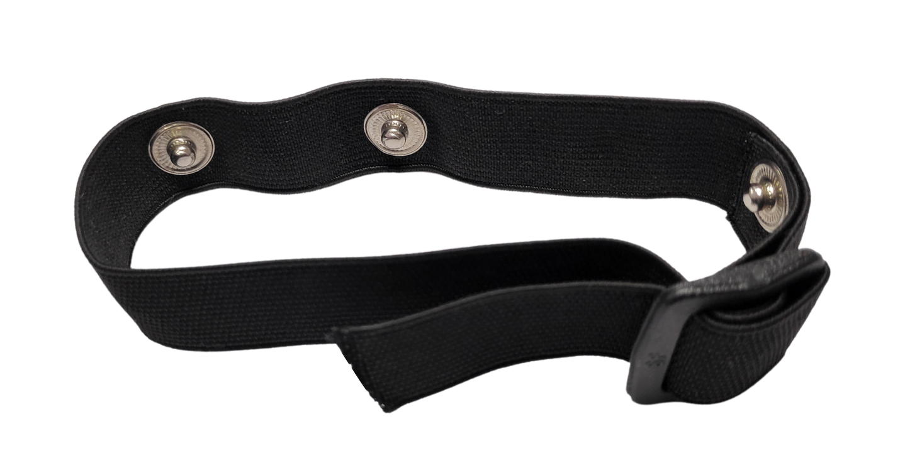
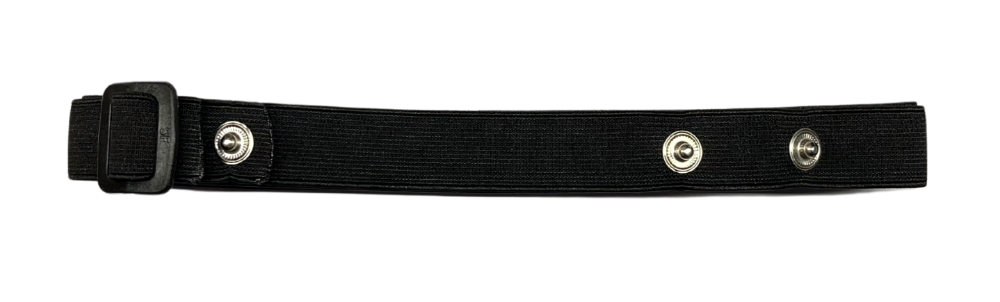
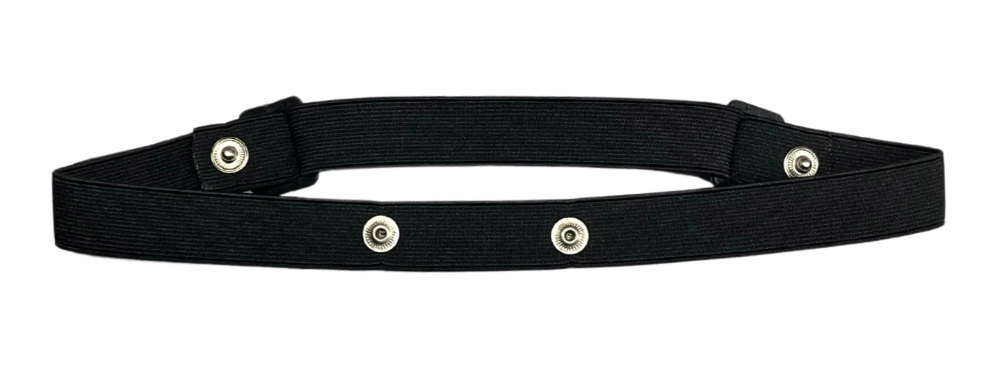
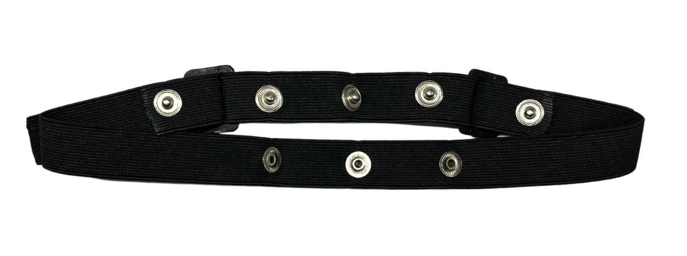

Menggunakan BioAmp Bands#
Ringkasan#
BioAmp Bands adalah pita elektroda kering yang dapat diregangkan yang memungkinkan Anda merekam sinyal biopoten sial dari tubuh Anda baik dari otak (EEG), otot (EMG) atau jantung (ECG). Pita ini hanya dapat digunakan dengan Hardware BioAmp kami dengan membuat koneksi menggunakan Kabel BioAmp.
Mengapa menggunakan BioAmp Bands?#
Biasanya, orang menggunakan elektroda gel untuk merekam sinyal biopoten sial dari permukaan kulit. Tetapi, itu memiliki kelemahan sendiri. Jadi kami datang dengan BioAmp Bands ini menggunakan mana pengguna dapat menikmati pengalaman yang lebih nyaman, hemat biaya, dan bebas masalah saat merekam sinyal biopoten sial.
Kenyamanan: BioAmp Bands umumnya lebih nyaman dipakai daripada elektroda gel, terutama untuk rekaman jangka panjang. Mereka menyesuaikan dengan bentuk tubuh dan menghindari sensasi lengket, terkadang iritasi dari elektroda gel.
Dapat Digunakan Ulang: Tidak seperti elektroda gel, yang sering sekali pakai dan perlu diganti secara sering, BioAmp Bands dapat digunakan kembali beberapa kali. Ini membuatnya lebih hemat biaya dan ramah lingkungan.
Mudah Digunakan: Pita ini mudah dipakai dan disesuaikan, mengurangi masalah setup dan memastikan penempatan yang konsisten.
Kebersihan: Mereka dapat dengan mudah dibersihkan dan disanitasi antara penggunaan, mengurangi risiko iritasi kulit dan infeksi. Elektroda gel, di sisi lain, dapat meninggalkan residu pada permukaan kulit.
Performa: Pita dapat memberikan rekaman sinyal yang stabil dan dapat diandalkan tergantung pada kondisi lingkungan Anda. Untuk kondisi panas/lembab, pita biasanya berkinerja lebih baik saat merekam sinyal. Tetapi jika cuaca dingin menyebabkan kulit kering, maka disarankan untuk menyiapkan kulit dengan benar dan aplikasikan gel elektroda antara bagian metalik kabel dan permukaan kulit. Jika Anda merasa impedansi kulit meningkat, maka aplikasikan gel elektroda secara sering. Opsi lain adalah menggunakan elektroda gel setelah menyiapkan kulit dengan benar.
Jenis BioAmp Bands#
Ada 3 jenis BioAmp Bands dan semua pita ini menawarkan solusi yang ditargetkan dan efisien untuk merekam sinyal biopoten sial dari otot, jantung, dan otak, membuatnya alat serbaguna untuk berbagai aplikasi HCI/BCI.
1. Muscle BioAmp Band#
Muscle BioAmp Band (EMG Band) adalah pita yang dapat diregangkan yang dapat dihubungkan ke Hardware Muscle BioAmp kami atau sensor EXG apa pun menggunakan Kabel BioAmp. Ini memungkinkan Anda merekam sinyal otot Anda tanpa masalah.

2. Heart BioAmp Band#
Heart BioAmp Band (ECG Band) adalah pita yang dapat diregangkan yang dapat dihubungkan ke Hardware Heart BioAmp kami atau sensor EXG apa pun menggunakan Kabel BioAmp. Ini memungkinkan Anda merekam sinyal ECG Anda tanpa masalah.

3. Brain BioAmp Band#
Brain BioAmp Band (EEG Band) adalah pita yang dapat diregangkan yang dapat dihubungkan ke Hardware Brain BioAmp kami atau sensor EXG apa pun menggunakan Kabel BioAmp untuk merekam sinyal dari otak tanpa masalah.
Anda dapat mendapatkan Brain BioAmp Band 2-saluran atau 6-saluran sesuai dengan persyaratan proyek atau penelitian Anda:
2-Channel Brain BioAmp Band#
Ini dapat digunakan untuk merekam sinyal EEG hingga 2 saluran baik dari korteks visual (belakang kepala Anda) atau bagian prefrontal korteks otak.

6-Channel Brain BioAmp Band#
Ini dapat digunakan untuk merekam sinyal EEG hingga 6 saluran baik dari korteks visual (belakang kepala Anda) atau bagian prefrontal korteks otak.

Menggunakan Muscle BioAmp Band#
Assembly#
Ambil Muscle BioAmp Band Anda, pegang sisi pita yang memiliki gesper dan sejajarkan bagian atas gesper dengan permukaan datar snap.

Ambil ujung lain pita dan masukkan ke dalam gesper.

Pita Anda sekarang siap digunakan. Anda juga dapat menyesuaikan ukuran pita sesuai dengan otot target Anda.

Skin Preparation#
Aplikasikan gel persiapan kulit Nuprep pada permukaan kulit di mana elektroda kering akan ditempatkan untuk menghilangkan sel kulit mati dan membersihkan kulit dari kotoran. Setelah menggosok permukaan kulit secara menyeluruh, bersihkan dengan alcohol swab atau wet wipe.
Untuk informasi lebih lanjut, silakan lihat langkah-langkah detail Panduan Persiapan Kulit.
Measure EMG#
Balikkan pita dan snap elektroda kering Kabel BioAmp pada pita seperti yang ditunjukkan di bawah.

Balikkan pita lagi dan pakai pada lengan Anda dengan cara sehingga IN+ dan IN- ditempatkan di lengan dekat saraf ulnar dan REF (referensi) di sisi jauh pita.

Note
Pastikan elektroda kering (bagian berkilau dari Kabel BioAmp) berada dalam kontak langsung dengan kulit.
Sekarang letakkan sedikit gel elektroda atau pasta Ten20 antara kulit dan elektroda kering untuk mendapatkan akuisisi sinyal terbaik.

Note
Setelah menggunakan pita, jangan biarkan residu gel pada elektroda kering lebih dari satu jam karena dapat mengkorosi mereka dari waktu ke waktu.
Cuci pita dengan sabun cair dan bilas dengan benar setelah setiap penggunaan. Gunakan lagi hanya ketika benar-benar kering.
Using Heart BioAmp Band#
Skin Preparation#
Apply Nuprep Skin Preparation Gel on your chest where dry electrodes would be placed to remove dead skin cells and clean the skin from dirt. After rubbing the skin surface thoroughly, clean it with an alcohol wipe or a wet wipe.
For more information, please check out detailed step by step Panduan Persiapan Kulit.
Assembly#
Take your Heart BioAmp Band and wrap the band around your chest in such a way that the pointy part of the snap touches your chest and the flat part is on the outer side.

Now insert the loose end of the band into the buckle and tighten it by pulling the strap.

Your band is now ready to use. You can also adjust the size of the band according to your chest size.
Measure ECG#
Snap the IN- cable on the left most side of the band, IN+ cable in the middle, and REF cable on the right side as shown below.

Note
Make sure the dry electrodes (shiny parts of the BioAmp Cable) are in direct contact with the skin.
Now put a small amount of electrode gel or Ten20 paste between the skin and dry electrodes to get the best signal acquisition.

Note
After using the band, don’t leave the gel residue on the dry electrodes longer than an hour as it may corrode them over a period of time.
Wash the band with liquid soap and rinse it properly after every use. Use it again only when it is completely dry.
Using Brain BioAmp Band#
Assembly#
You get the band in two parts - the longer part consists of buckles at both ends and the shorter one has loose ends on both sides.
Hold one end of the longer band and align the top part of the buckle with the flat surface of the snap.
Now take the shorter band and insert it into the buckle of longer band.
Repeat step 1 and 2 for the other buckle on the longer band.
Your band is now ready to use. You can also adjust the size of the band according to your head size.
Skin Preparation#
Apply Nuprep Skin Preparation Gel on your targeted area (visual cortex or prefrontal cortex) where dry electrodes would be placed to remove dead skin cells and clean the skin from dirt. After rubbing the skin surface thoroughly, clean it with an alcohol wipe or a wet wipe.
For more information, please check out detailed step by step Panduan Persiapan Kulit.
Measure 1-channel EEG#
Flip the band, take your BioAmp Cable, and snap the REF cable on a gel electrode. Now snap the IN- and IN+ cable on:
Fp1 and Fp2 positions for recording EEG from prefrontal cortex
O1 and O2 positions for recording EEG from visual cortex
Note
The electrode positions mentioned above are according to International 10-20 sytem for recording EEG.
Flip the band again and wear it in a way so that the dry electrodes (shiny parts of the cable) are in contact with:
skin surface on the forehead (if recording from prefrontal cortex)
scalp surface on the back side of your head (if recording from visual cortex)
Peel of the plastic backing of the gel electrode and place it on the bony part behind your earlobe.
Note
While placing the gel electrodes on the skin, make sure to place the non-sticky tab of the electrode in the direction opposite to your hair growth. This allows you to remove the electrodes easily without pulling off much body hair.
Now put a small amount of electrode gel or Ten20 paste between the skin/scalp and dry electrodes to get the best signal acquisition.